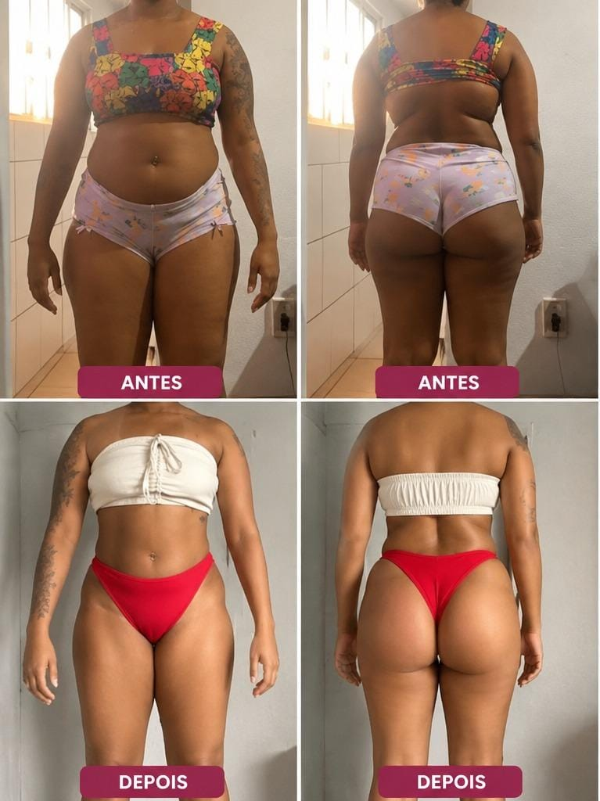
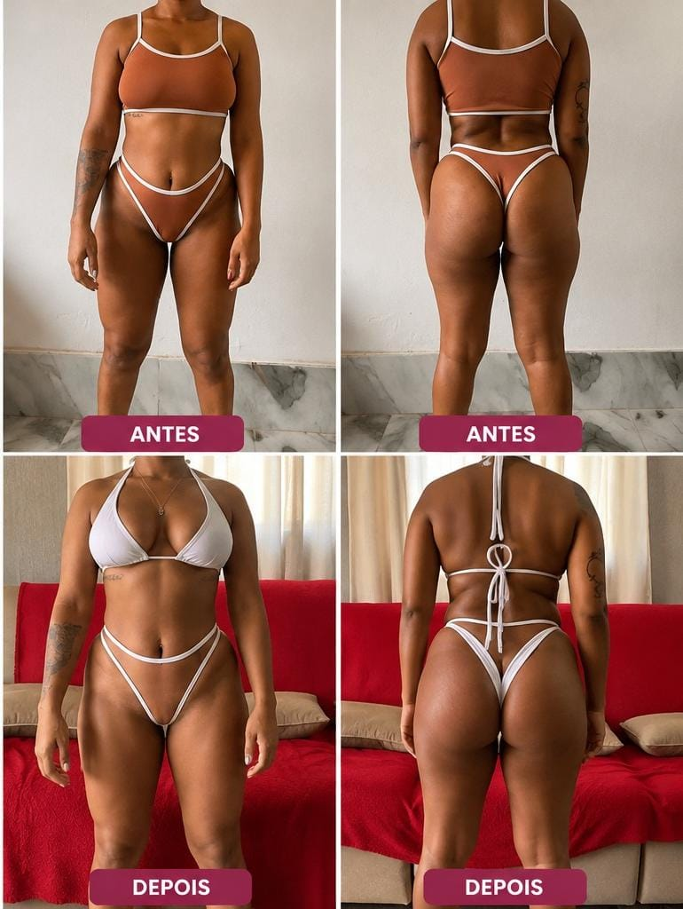

Personal Training
Treino individualizado com progressão, técnica e decisões alinhadas ao seu objetivo e à sua rotina.
Treino • Técnica • Nutrição • Rotina
Acompanhamento pensado para transformar objetivo em rotina: treino inteligente, estratégia nutricional e consistência sem fórmulas impossíveis.
Quem é a Fran
Sou mãe, esposa, atleta e professora. Mas, antes de tudo, sou uma mulher comum que enfrentou ansiedade, depressão e sobrepeso — e decidiu mudar a própria história.
Neste vídeo, compartilho um pouco da minha trajetória, dos desafios que enfrentei e de como a disciplina, a organização e a constância transformaram não apenas o meu corpo, mas também a minha vida.
Minha história não é sobre ser perfeita. É sobre mostrar que, mesmo começando do seu jeito e no seu tempo, você também é capaz de mudar. Talvez o primeiro passo que esteja faltando seja simplesmente acreditar que você consegue.
Escolha sua jornada
Treino individualizado com progressão, técnica e decisões alinhadas ao seu objetivo e à sua rotina.
Planejamento que busca adesão e consistência, sem desconectar alimentação da vida real.
Treino e nutrição conectados em uma jornada com acompanhamento, feedback e evolução contínua.
Conteúdo em movimento
Uma visão mais editorial do trabalho da Fran. No desktop, o treino recebe destaque; no celular, os conteúdos viram uma experiência horizontal por swipe.
Resultados reais
Disciplina, método e consistência que transformam.


Resultados reais apresentados em comparações antes e depois.
Dúvidas frequentes
A proposta é adaptar a estratégia ao objetivo, rotina e evolução de cada pessoa.
O fluxo definitivo será descrito conforme o processo real de atendimento da Fran.
A página prevê uma jornada integrada; os detalhes finais devem refletir os serviços efetivamente oferecidos.
Seu próximo passo
Fale com a Fran e entenda qual formato de acompanhamento faz sentido para o seu objetivo.
Falar com a Fran